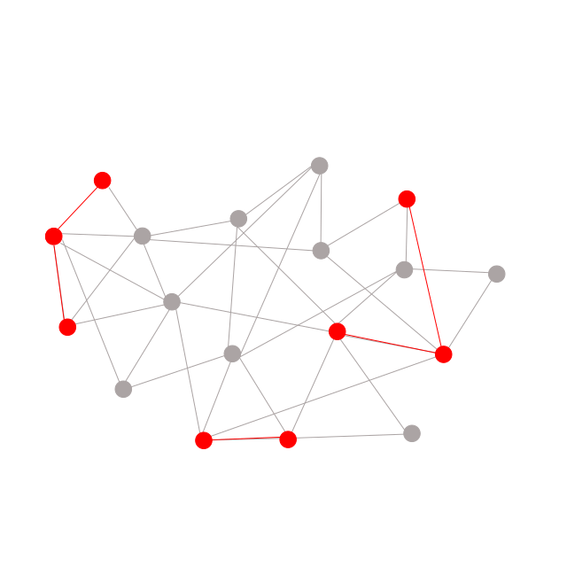
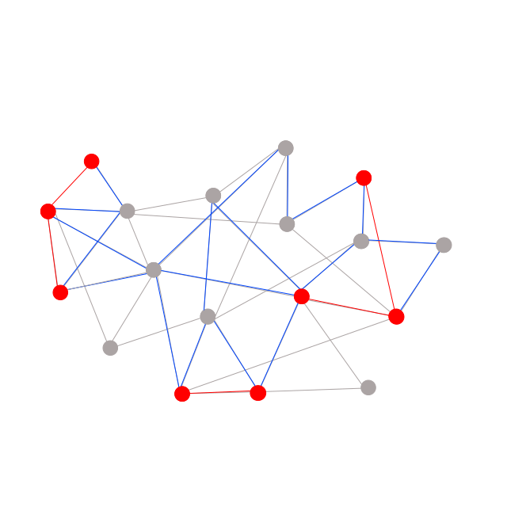
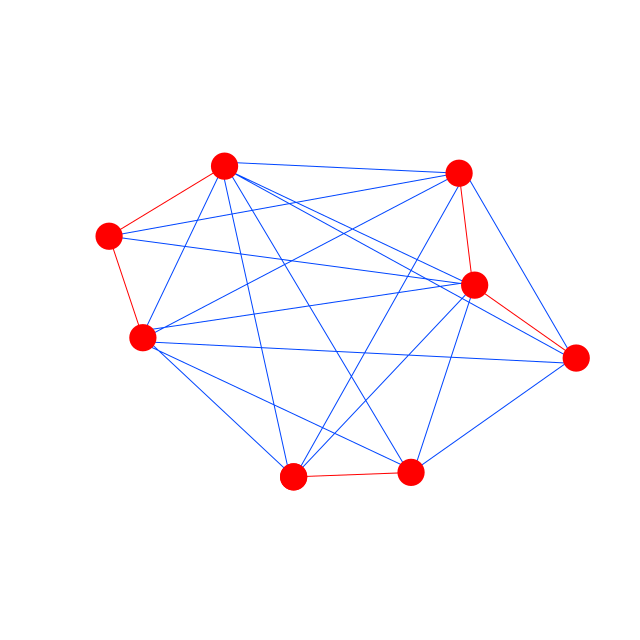
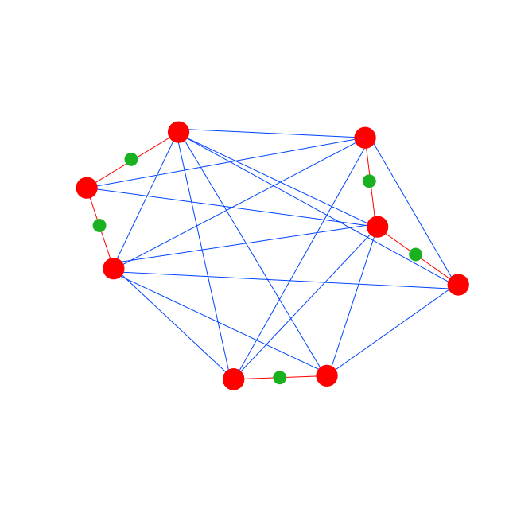
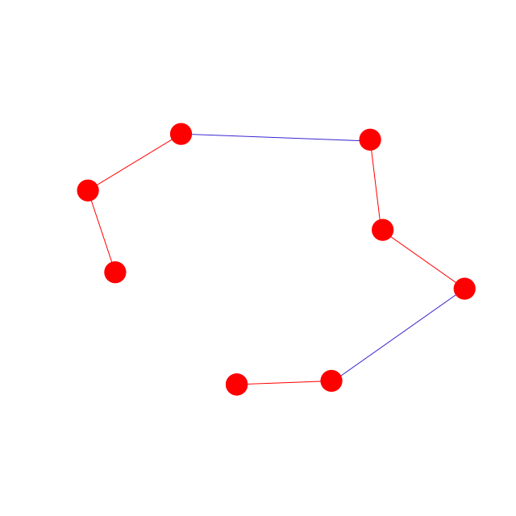

Описание принципа работы алгоритма:
Алгоритм решает задачу поиска оптимального маршрута, проходящего по нескольким ключевым улицам в городе. Критерием оптимизации является время, необходимое на то, чтобы пройти этот маршрут.
Для решения задачи карта дорог города (или необходимой его части) представляется в виде графа (далее - исходный граф). Исходный граф направлен соответственно фактическому направлению движения, определенному на улицах города. Так как единственная оптимизационная метрика это время, вес ребер графа - время, необходимое на прохождение пути между двумя точками. Сами ребра представляют собой участки дорог, а вершины моделируют перекрестки.
На основании исходного графа строится Оптимальный граф, представляющий собой только необходимые вершины (перекрестки на участках, которые необходимо убрать), а также кратчайшие пути между ними, найденные в исходном графе, и сами улицы, которые необходимо убрать.
Далее в Оптимальном графе происходит поиск кратчайшего маршрута, проходящего через все его вершины. Поиск может осуществляться любым алгоритмом, оптимально решающим задачу коммивояжера (для малого количества вершин простым перебором, в более сложных случаях - алгоритмом муравьев и (или) методом ветвей и границ).
Исходный граф:

- Серые вершины - перекрестки, не находящиеся на обязательных дорогах
- Серые ребра - фактические дороги в городе
- Красные вершины - перекрестки, находящиеся на обязательных дорогах
- Красные ребра - дороги, по которым необходимо проехать
На входе алгоритм получает граф, отображающий дорожную карту города, с ребрами взвешанными по времени, необходимому для прохождения участка.
Поиск кратчайших путей:

- Синие ребра - дороги, соединяющие красные вершины кратчайшим образом
Далее в этом графе находятся пути, соединяющие красные вершины кратчайшим образом.
Построение оптимизированного графа:

- Синие ребра - пути, соединяющие красные вершины кратчайшим образом
На основании исходного графа строится оптимальный граф, синие ребра которого отображают уже не дороги, а кратчайшие пути между красными вершинами.
Расстановка мнимых перекрестков:

- Зеленые вершины - мнимые перекрестки
Так как алгоритмы, решающие задачу коммивояжера, ищут пути, проходящие через все вершины, не гарантируя, что пройдут по определенным ребрам, на красных ребрах устанавливаются мнимые перекрестки - вершины, которые заставят алгоритмы поиска пути не выбирать путь, пропускающий хотя бы одно красное ребро.
Работа алгоритма поиска:

На выходе алгоритм дает один путь, пролегающий по всем целевым улицам и являющийся оптимальным или максимально приближенным к оптимальному.